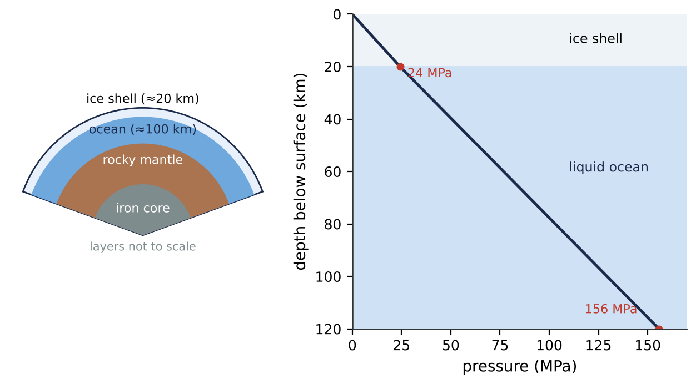
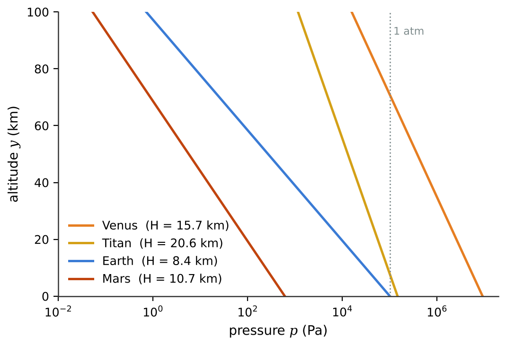
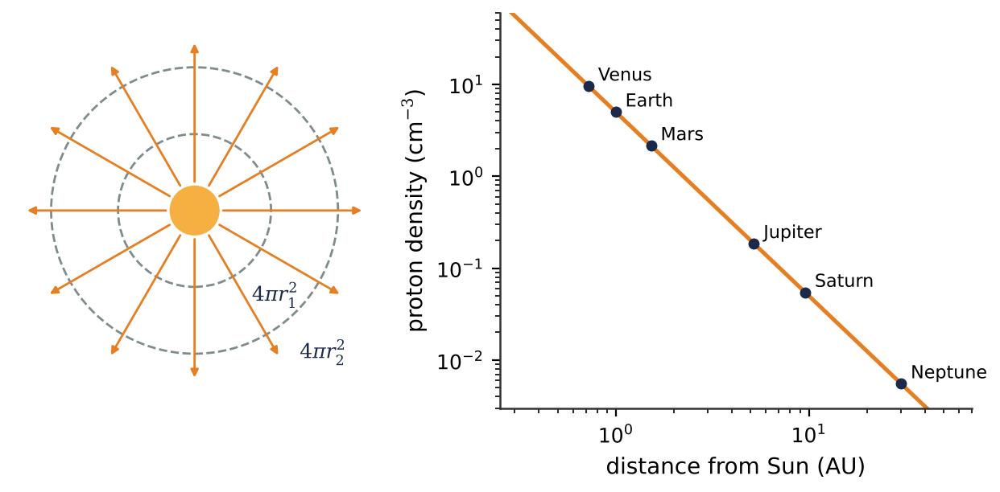

🌊What you will learn
By the end of this module, you can:
- Compute average densities and convert between number density and mass density for astronomical objects.
- Apply hydrostatic equilibrium to find pressure versus depth in oceans and altitude in isothermal atmospheres.
- Use Archimedes's principle to analyse floating objects and balloons on other worlds.
- Apply the continuity equation and Bernoulli's equation to fluid flow, from rocket feed lines to the solar wind.
- Use the Reynolds number to decide whether a flow is laminar or turbulent.
12.1Gases, Liquids, and Density
A fluid is any substance that can flow: it cannot resist a shearing force while at rest. Liquids (Earth's oceans, Titan's methane lakes) have a nearly fixed volume; gases (the CO\(_2\) air of Venus) expand to fill their container. On astronomical scales the line blurs: Jupiter's deep hydrogen behaves like a liquid metal, and the plasma inside stars flows like a fluid.
The key property is density, \(\rho = m/V\), in kg/m\(^3\). For a planet of mass \(M\) and radius \(R\) the average density is \(\rho_{av} = 3M/(4\pi R^3)\). It can be measured from afar and reveals composition: Earth's 5510 kg/m\(^3\) is higher than any surface rock (about 3000 kg/m\(^3\)), so Earth must have an iron core; Saturn's 690 kg/m\(^3\) is less than water, so it is mostly hydrogen and helium. The specific gravity is density divided by 1000 kg/m\(^3\).
Astronomical densities span nearly 40 powers of ten, from the interstellar medium (\(\sim 2\times10^{-21}\ \text{kg/m}^3\)) to neutron stars. For gases we often use the number density \(n\) (particles per m\(^3\)), with \(\rho = n m_p\). Careful: \(1\ \text{cm}^{-3} = 10^6\ \text{m}^{-3}\).
Gas density depends on pressure and temperature, \(\rho = pM/(RT)\) for an ideal gas, while liquids are nearly incompressible.
12.2Pressure in a Fluid and Hydrostatic Equilibrium
A fluid at rest pushes perpendicular to any surface. The pressure is \(p = dF_\perp/dA\), a scalar measured in pascals (1 bar = \(10^5\) Pa, 1 atm = \(1.013\times10^5\) Pa).
Pressure rises with depth because each layer must hold up the weight of the fluid above. Balancing forces on a thin slab gives the equation of hydrostatic equilibrium, \(dp/dy = -\rho g\), one of the most important equations in astrophysics. For constant \(\rho\) and \(g\) it integrates to \(p = p_0 + \rho g h\): only depth matters, not the shape of the container. Raising \(p_0\) raises the pressure everywhere by the same amount (Pascal's law). Gauge pressure is \(p - p_{atm}\).
Icy-moon oceans. Apply \(p = p_0 + \rho g h\) layer by layer. Europa's 100 km deep ocean under 20 km of ice reaches a seafloor pressure above that of Earth's Mariana Trench, despite the weak gravity.
Atmospheres. For an isothermal ideal gas, \(\rho\) is proportional to \(p\), so pressure falls exponentially with height, \(p = p_0 e^{-y/H}\), with scale height \(H = kT/(mg)\). Earth's \(H\) is about 8.4 km; Titan's, about 21 km, because its gravity is weak.
Stars. With \(g(r) = Gm(r)/r^2\), hydrostatic equilibrium is the first principle of stellar structure: the pressure must climb to about \(10^{16}\) Pa at the Sun's center.


12.3Buoyancy
Archimedes's principle: a body completely or partly immersed in a fluid feels an upward buoyant force equal to the weight of the fluid it displaces, \(B = \rho_{fluid} V_{sub} g\). The reason: the surrounding fluid pushes on the body exactly as it would push on fluid filling the same space, and that fluid would be in equilibrium. Because pressure grows with depth, the push on the bottom exceeds that on the top.
An object sinks if its average density is greater than the fluid's. Otherwise it floats with
\[ \frac{V_{sub}}{V} = \frac{\rho_{obj}}{\rho_{fluid}} \]Icebergs float about 90% submerged; water ice would sink in Titan's methane lakes (\(\rho\approx450\ \text{kg/m}^3\)). Saturn's mean density (688 kg/m\(^3\)) means it "would float" 69% submerged in a giant bathtub of water: a fun thought experiment, though physically fanciful. Notice that \(g\) cancels in floating fractions.
Balloons on other worlds. The net lift per cubic meter is \((\rho_{air}-\rho_{gas})g\). Venus's heavy CO\(_2\) made the 1985 Vega balloons work well, and Titan's dense, cold nitrogen air under weak gravity makes it ideal for balloons and for NASA's Dragonfly rotorcraft. Buoyancy also drives convection in Earth's mantle and the granulation seen on the Sun's surface.
12.4Fluid Flow
We model a moving fluid as an ideal fluid: incompressible and without internal friction. In steady flow the pattern does not change with time, and fluid elements follow streamlines; a bundle of them forms a flow tube whose walls fluid never crosses. Smooth layered flow is laminar; chaotic flow is turbulent.
Continuity. In a rocket's propellant line whose cross section changes from \(A_1\) to \(A_2\), the volume entering per second must equal the volume leaving. For an incompressible fluid:
\[ A_1 v_1 = A_2 v_2 \]The product \(Av\) is the volume flow rate \(dV/dt\). Where the tube narrows, the fluid speeds up. For a compressible fluid, the mass flow rate \(\rho A v\) is what stays constant.
The solar wind. The Sun blows protons outward at roughly 400 km/s. Treat it as a flow through spheres of area \(4\pi r^2\). With constant speed, continuity gives \(\rho\propto 1/r^2\): about 5 protons per cm\(^3\) at Earth, but only 0.006 per cm\(^3\) at Neptune. The same reasoning gives the Sun's mass loss rate, about \(10^9\) kg/s.

12.5Bernoulli's Equation
When a fluid speeds up, something must push it: a pressure difference. So pressure is lower where the fluid moves faster. Applying the work-energy theorem to a fluid element moving along a flow tube gives Bernoulli's equation, valid along a streamline in an ideal fluid in steady flow:
\[ p_1 + \rho g y_1 + \tfrac{1}{2}\rho v_1^2 = p_2 + \rho g y_2 + \tfrac{1}{2}\rho v_2^2 \]Each term is an energy per unit volume. With \(v = 0\) it reduces to \(p = p_0 + \rho g h\).
Dynamic pressure \(\tfrac{1}{2}\rho v^2\) tells engineers how hard a wind pushes. A 27 m/s Martian dust storm in air of density 0.020 kg/m\(^3\) gives only about 7 Pa, like a gentle breeze on Earth. During atmospheric entry the speed is huge, so even thin air produces large pressures. A Pitot tube measures airspeed from \(v=\sqrt{2\Delta p/\rho}\).
Torricelli's theorem. Liquid leaving a small hole a depth \(h\) below the open surface of a tank exits with \(v = \sqrt{2gh}\), the speed of free fall through \(h\). In a lunar habitat the leak is \(\sqrt{1.62/9.80} = 0.41\) times as fast as on Earth. Bernoulli's principle also contributes to the lift on wings and rotor blades.
12.6Viscosity and Turbulence
Viscosity is a fluid's internal friction. Dragging a plate of area \(A\) at speed \(v\) over a fluid layer of thickness \(L\) needs a force \(F = \mu A v/L\), where \(\mu\) (Pa\(\cdot\)s) is the viscosity: about \(10^{-3}\) for water, \(1.8\times10^{-5}\) for air. A small sphere moving slowly feels Stokes's drag \(F = 6\pi\mu r v\), which is why fine Martian dust stays aloft for months.
Whether a flow is smooth or chaotic depends on the Reynolds number, the ratio of inertia to viscosity:
\[ Re = \frac{\rho v D}{\mu} = \frac{vD}{\nu} \]where \(\nu = \mu/\rho\) is the kinematic viscosity. In pipes the flow is laminar for \(Re \lesssim 2000\) and turbulent above about 4000. Flows with the same geometry and the same \(Re\) behave alike, which lets engineers test models in wind tunnels.
Ingenuity flew in Mars's thin air at a Reynolds number about 40 times lower than the same rotor on Earth, so its blades had to be thin and spin at about 2400 rpm.
Accretion disks. For gas to spiral onto a young star it must lose angular momentum through viscosity, on a timescale \(t\sim R^2/\nu\). Molecular viscosity would need far longer than the age of the universe. Disk Reynolds numbers are enormous, so the flow is turbulent, and turbulent eddies supply a much larger effective viscosity.
★Key takeaways
- Density \(\rho = m/V\); a planet's average density \(3M/(4\pi R^3)\) reveals what it is made of.
- Hydrostatic equilibrium, \(dp/dy = -\rho g\), gives \(p = p_0+\rho g h\) in liquids and an exponential atmosphere with scale height \(H = kT/(mg)\); it also holds stars up.
- Archimedes: the buoyant force equals the weight of displaced fluid; a floating body is submerged by the fraction \(\rho_{obj}/\rho_{fluid}\).
- Continuity: \(Av\) (or \(\rho A v\)) is constant along a flow tube, so the solar wind thins as \(1/r^2\).
- Bernoulli: \(p+\rho g y+\tfrac12\rho v^2\) is constant along a streamline; faster flow means lower pressure, and \(v=\sqrt{2gh}\) for a leaking tank.
- The Reynolds number \(Re=\rho v D/\mu\) separates laminar (small \(Re\)) from turbulent (large \(Re\)) flow; astrophysical disks are turbulent.
⟡Worked examples
Each example follows the book's method: Identify and set up, Execute, Evaluate.
Model Europa's outer layers as an ice shell 20 km thick (\(\rho_{ice} = 920\ \text{kg/m}^3\)) on a liquid water ocean 100 km deep (\(\rho_w = 1000\ \text{kg/m}^3\)). Europa has essentially no atmosphere and \(g = 1.315\ \text{m/s}^2\). Find the pressure (a) at the base of the ice and (b) at the ocean floor. (c) Compare with the bottom of Earth's Mariana Trench, 10.9 km deep, where seawater has \(\rho = 1025\ \text{kg/m}^3\).
Show solution (try it first)
Identify and set up: Each layer has nearly uniform density, so we apply \(p = p_0 + \rho g h\) twice, starting with \(p_0\approx 0\) at Europa's surface.
Execute: (a) \(p_1 = (920)(1.315)(2.0\times10^4)\ \text{Pa} = 2.42\times10^7\ \text{Pa}\).
(b) \(p_2 = p_1 + \rho_w g h_w = 2.42\times10^7\ \text{Pa} + (1000)(1.315)(1.00\times10^5)\ \text{Pa} = 1.56\times10^8\ \text{Pa}\), about 1540 atm.
(c) On Earth, including the atmosphere: \(p = 1.013\times10^5 + (1025)(9.80)(1.09\times10^4) = 1.10\times10^8\ \text{Pa}\).
Evaluate: Europa's seafloor pressure is about 1.4 times the Mariana Trench value. The great depth more than compensates for the weak gravity, so a Europa submarine would need to be at least as strong as Earth's deepest-diving submersibles.
A proposed Venus balloon floats at 55 km altitude, where \(p = 5.3\times10^4\ \text{Pa}\), \(T = 300\ \text{K}\) and \(g = 8.87\ \text{m/s}^2\). The atmosphere is CO\(_2\) (\(M = 0.044\ \text{kg/mol}\)). The spherical balloon has radius 1.7 m and is filled with helium (\(M = 0.004\ \text{kg/mol}\)) at the same pressure and temperature. What is the largest combined mass of envelope and payload it can support?
Show solution (try it first)
Identify and set up: The balloon is fully immersed. In equilibrium \(\rho_{CO_2} V g = (m_{He} + m_{load}) g\), so \(m_{load} = (\rho_{CO_2} - \rho_{He})V\). Each gas density follows from \(\rho = pM/(RT)\).
Execute:
\[ \rho_{CO_2} = \frac{(5.3\times10^4)(0.044)}{(8.314)(300)} = 0.935\ \text{kg/m}^3, \qquad \rho_{He} = \frac{(5.3\times10^4)(0.004)}{(8.314)(300)} = 0.0850\ \text{kg/m}^3 \]\(V = \tfrac43\pi(1.7\ \text{m})^3 = 20.6\ \text{m}^3\), so \(m_{load} = (0.935-0.0850)(20.6)\ \text{kg} = 17\ \text{kg}\).
Evaluate: A balloon 3.4 m across carries about 17 kg, comparable to the 21 kg Vega balloons. Since both gases share \(p\) and \(T\), the lift depends only on the difference in molar masses, and heavy CO\(_2\) makes Venus friendly to balloons. Note that \(g\) cancelled.
During a Martian dust storm the wind reaches 27 m/s. Take the density of Martian air as 0.020 kg/m\(^3\) and Earth's sea-level air as 1.2 kg/m\(^3\). (a) Find the dynamic pressure of the Martian wind. (b) Find it for a 27 m/s wind on Earth. (c) What wind speed on Earth has the same dynamic pressure as the Martian storm?
Show solution (try it first)
Identify and set up: The force of the wind on a surface is set by the dynamic pressure \(\tfrac12\rho v^2\), the pressure rise when the wind is brought to rest (Bernoulli with \(v_2 = 0\), \(y_1 = y_2\)).
Execute: (a) Mars: \(\tfrac12(0.020)(27)^2 = 7.3\ \text{Pa}\). (b) Earth: \(\tfrac12(1.2)(27)^2 = 440\ \text{Pa}\).
(c) Setting \(\tfrac12\rho_E v_E^2 = \tfrac12\rho_M v_M^2\): \(v_E = v_M\sqrt{\rho_M/\rho_E} = (27\ \text{m/s})\sqrt{0.020/1.2} = 3.5\ \text{m/s}\).
Evaluate: A Martian "hurricane" pushes like a 13 km/h breeze on Earth, so a storm toppling a rocket is pure fiction. The real hazard is dust coating solar panels, which ended the Opportunity rover's mission in 2018.
✍️Activity 12: Oceans, Air and Wind Across the Solar System
Answer the eight questions below, then write the short reflection. Use \(k = 1.381\times10^{-23}\ \text{J/K}\) and \(1\ \text{u} = 1.661\times10^{-27}\ \text{kg}\) where needed. Enter plain numbers in the requested unit; answers within 2% are accepted.
8 graded items, 1 point each, plus a short reflection. For each problem, write your solution in the solution box, then type the final answer as a plain number (keep 3 significant figures; small rounding differences are accepted). You may submit up to 2 times; every attempt is recorded. Right after submitting you will see your score and which items are correct or wrong; after your last attempt you will also see the correct answers.
Use these values unless an item gives its own: \(g_\text{Earth} = 9.80\ \text{m/s}^2\), \(g_\text{Moon} = 1.62\ \text{m/s}^2\), \(g_\text{Mars} = 3.71\ \text{m/s}^2\), \(G = 6.674\times10^{-11}\ \text{N·m}^2/\text{kg}^2\), \(M_\text{Earth} = 5.972\times10^{24}\ \text{kg}\), \(R_\text{Earth} = 6371\ \text{km}\).